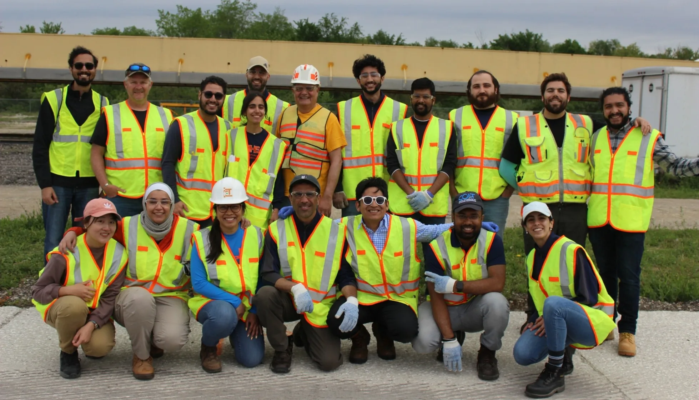
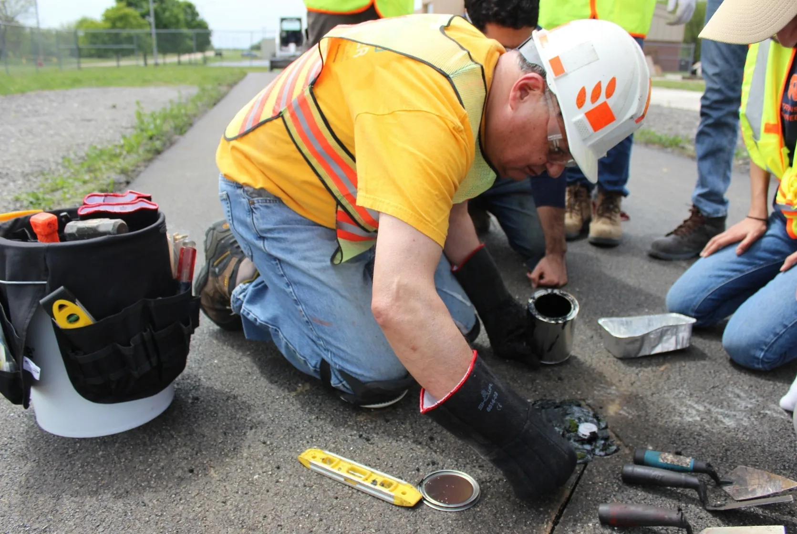
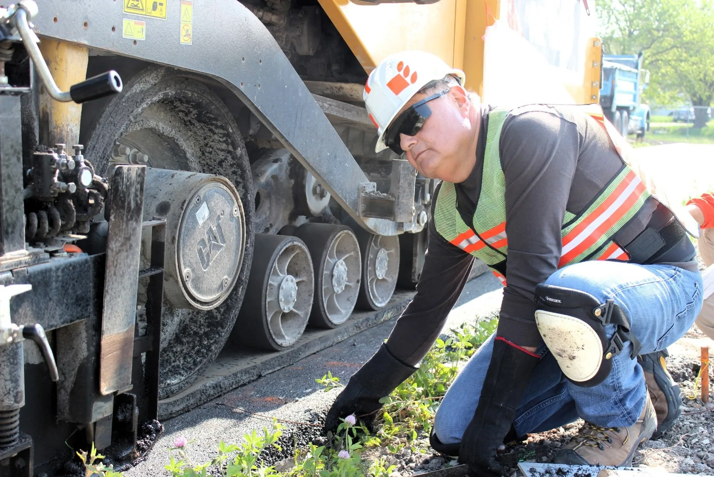
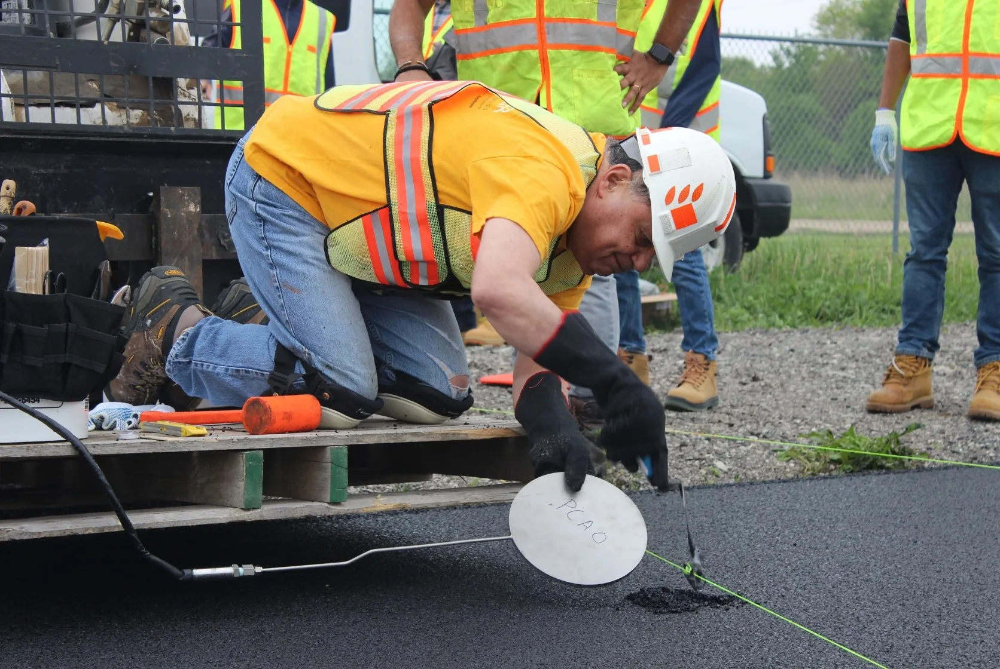

The Reborn of the Illinois Accelerated Pavement Tester
The Upgrade of ATLAS to the I-APT
It had been some years since the Illinois Accelerated Pavement Tester (I-APT) was operational. The original piece of equipment, was known previously as the Advanced Transportation Loading System (ATLAS). ATLAS was going to be upgraded because large-scale testing was needed for IDOT project R27-216: Optimizing the Use of Local Aggregates in Stone-Matrix Asphalt. Indeed there was a specific project called R27-ALS: Advanced Transportation Loading Assembly Repairs and Upgrades to refurbish and upgrade the ATLAS to the I-APT (read here). There was an internal poll among the members of ICT to rename ATLAS to something more fitting. But to use a pavement tester, we need to build a pavement section to test on. That day came shortly after the May 2023 graduation. On May 15th, 2023, the construction of the pavement test section began at the Illinois Center for Transportation (ICT) in Rantoul, IL. The pavement test section was built to evaluate the performance of stone-matrix asphalt (SMA) mixtures with different local aggregates. In Fig 1, we can see all the ICT grad students that got together to help build the pavement test section.

Ready to help during the construction of the pavement test section.
Section Instrumentation
Perhaps, the most important part of building a pavement test section is the instrumentation. Without instrumentation, we would not be able to measure the response of the pavement under the repeated loading of the I-APT. For this pavement test section, we installed strain gauges, pressure cells, and thermocouples at different depths of the pavement structure. The strain gauges will help us measure the tensile and compressive strains at the bottom of the asphalt layers, while the pressure cells will help us measure the vertical stresses at the middle of the asphalt layer.

Prof. Al-Qadi himself led the installation of the instrumentation. In Fig 2, we can see Prof. Al-Qadi installing a strain gauge at the bottom of the asphalt layer. The installation of the instrumentation was a meticulous process that required attention to detail to ensure accurate measurements during the testing phase. If we cannot rely on the instrumentation, then the entire purpose of the pavement test section is defeated. Students from ICT helped with the installation of the instrumentation, assisting Prof. Al-Qadi in the process. He described the process as he was installing each piece of instrumentation to ensure that everyone understood the importance of each step. Prof. Al-Qadi, Greg Renshaw, and Javier Garcia-Mainieri, the lead student of the project, designed the layout of the instrumentation. Strain gauges were installed in both longitudinal and transverse directions to capture the different strain responses. Two different types of strain gauges were used: wired and wireless. The wireless strain gauges were used here experimentally to see how they perform compared to the traditional wired strain gauges.

Thermocouples were also installed within the SMA layer to monitor temperature variations during testing. In Fig 3, we can see Prof. Al-Qadi working on it. Temperature plays a crucial role in asphalt performance, affecting its susceptibility to deformation. By monitoring temperature changes, we can normalize the strain and stress data accordingly. Proper installation of thermocouples is essential to ensure accurate temperature readings, which will aid in the analysis of pavement performance. For large-scale testing, temperature variations can significantly impact the results, so monitoring temperature data is vital. When the test starts, the I-APT will be enclosed in a heated tent to maintain consistent temperature conditions. Despite such efforts, temperature fluctuations can still occur, making the thermocouple data invaluable for interpreting the test results. Ideally, themocouples should be placed at various depths to capture the temperature gradient within the pavement structure, but for this test section, they were only placed at one location.

Pressure cells (PCs) were installed at the mid-depth of the SMA layer to measure vertical stresses during loading. This was the most complicated installation of all the instrumentation. In Fig 4, we can see Prof. Al-Qadi carefully placing the pressure cells. The process involved cutting a precise hole in the asphalt layer, placing the pressure cell, and then patching the hole to ensure proper contact between the pressure cell and the surrounding asphalt. A Bobcat (operated by Greg) was used to help reach the location of the pressure cell installation. Students helped passing tools and materials during the process. Proper installation is crucial to obtain accurate stress measurements, which will help us understand how the pavement responds to the repeated loading of the I-APT. The pavement layout was properly marked with cords to ensure that instruments were installed in the correct locations according to the design plan. All the activities were captured in detail with photos and videos to document the installation process for future reference. A drone was also used to capture aerial footage of the entire pavement construction and instrumentation installation.
Ready to Test
It may take several years (if ever) to get to see another pavement test section built from scratch like this one. The data collected from this test section will allow ICT to conduct research from different perspectives: numerical models could be calibrated and validated, SMA mixtures could be evaluated, performance models could be developed, and lessons learned could be shared with the pavement engineering community. Testing will began in 2025 once the I-APT is fully operational. In Fig 5, we can see the satisfaction of a job well done after a long day of work. There are many handy people at ICT that made this possible. We are always told that to be well-rounded, we need to have both theoretical and practical knowledge. This project was a great opportunity to gain practical experience in pavement construction and instrumentation installation.